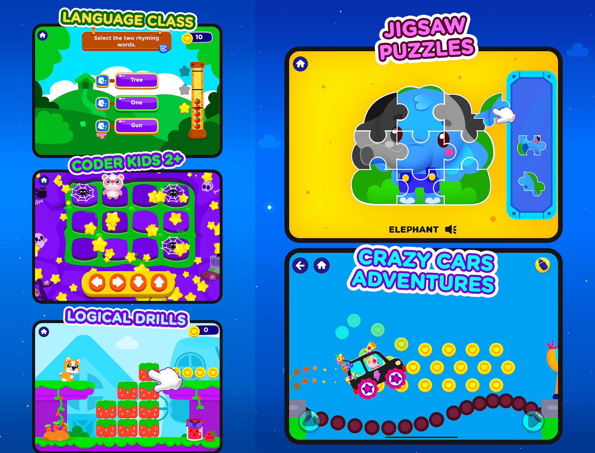
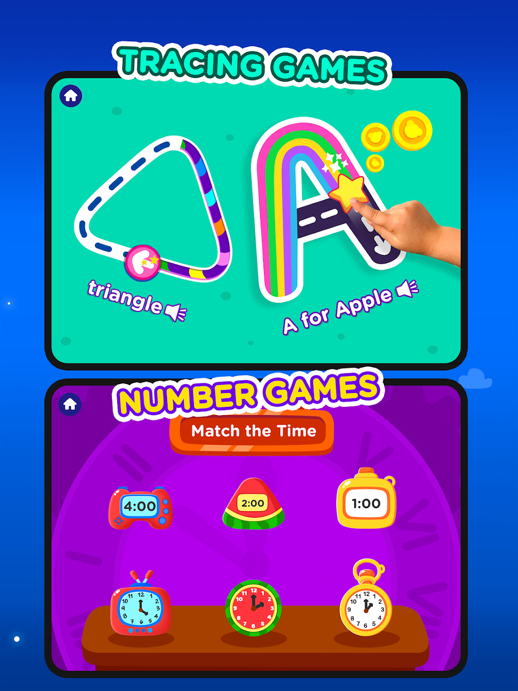

Overview
At Game District I developed, optimized, and launched mobile titles from concept through deployment on both stores — and maintained them after launch. The flagship was Piggy Panda: Learning Games, a super-app that bundles a growing collection of kids' games, shipped on a weekly release schedule by a multi-developer team.
Piggy Panda: Learning Games


An evolving platform bringing together old favorites and new games, updated weekly with fresh content. I contributed to the weekly release cycle, building new modules and enhancing existing features alongside developers, designers, and content creators.
Shipped titles
- Pizza Maker for Kids — a cooking game where toddlers shape and decorate pizzas. Google Play · App Store
- Cake Maker: Kids Cooking Games — bake and decorate cakes of different shapes. Google Play · App Store
- ABC - Learning — alphabet learning with matching and tracing for toddlers. Google Play · App Store
- Baby Phone — an entertainment game for toddlers. Google Play · App Store
What this work taught me
Shipping for toddlers sounds simple — it isn't. These titles demanded rock-solid frame rates on low-end devices, careful texture optimization, responsive UI for small hands, and the discipline of maintaining live products: refactoring legacy code without breaking what millions of small users already love.